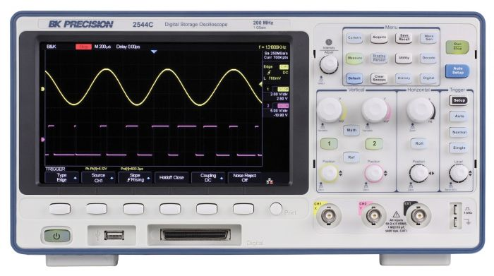
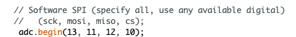

6.810 Engineering Interactive Technologies (fall 2020)
Problem Set Series: Multi-Touch Pad

Problem Set 2 (due Friday, Oct. 9, 2020, 11.59pm)
Now that you have the hardware ready, you will write some code for the sensing part of your multi-touch pad. In particular, you are going to do the following four steps:
- (1) Generate the appropriate PWM signal for the sender pin. Send the PWM signal from the sender pin to the multiplexer.
- (2) Configure the Multiplexer to select the right output channel to forward the PWM signal to the appropriate column of your multi-touch pad.
- (3) For receiving, replace the ESP ADC pins with external ADC pins by wiring up the MCP3008 chip. Read data from the external ADC pins via Serial Peripheral Interface (SPI) communication.
- (4) Iterate over each column and row to read the signals and plot them on the serial plotter.
Skeleton Code
Start by downloading the skeleton code for the PSet2 from here.
(1) Generate the appropriate PWM signal for the sender pin
As you can see in the circuit schematic, the first thing we need to do in code is to generate a PWM signal from the sender pin. This PWM signal then goes into the multiplexer and so on.

Pulse Width Modulation
Remember from lab3, that PWM is a technique that can be used to create voltages in-between 0V and 3.3V. In lab3 we used PWM to dim our display since the amount of voltage determines how bright the display is, here we will use PWM to turn on & off the voltage row-by-row for our multi-touch pad sender pins, so that we are scanning through the pad.
We can generate voltages in-between 0V and 3.3V by switching the signal between on and off.

Our PWM Signal
The signal that we are generating for the sender pin is 4 MHz, 25% Duty Cycle.
We will spare you the details why exactly we need this PWM signal since this falls under more advanced electronics.
Open the skeleton code and create the PWM signal in the setupPWM() function by following the steps below.

Configuring the PWM Signal
First, you need to tell Arduino how you want to configure the PWM signal using the ledcSetup() function.
You may be confused about the function name since we are not using LEDs. While the LED control (LEDC) peripheral is primarily designed to control the intensity of LEDs, it can also be used to generate PWM signals for other purposes.
ledcSetup(channel_number, frequency, duty_resolution)
Channel Number: The LEDC peripheral has 16 channels which can generate independent waveforms (note that these are NOT pin numbers on the ESP, but internal channels inside the ESP). The channel numbers range from 0-15. For our purposes, you can pick any channel you like.
Frequency: The PWM frequency that we use is 4MHz as mentioned above. The function takes the frequency in Hz, so you need to do the conversion and then enter that number into the parameter.
Duty Resolution: The duty cycle is defined as the percentage of the period for which the signal is "high". For example, a signal that has a 50% duty cycle is high for one half of the period and low for the other half (see image again above). In our case, we want to use a duty cycle of 25%. So how is this represented in the duty resolution? The duty resolution defines how many different duty cycles you can choose from when you generate the PWM signal from a pin. The duty resolution is defined as a number of bits, i.e. if you need 16 different duty resolutions your duty resolution is 4 bit. If your duty cycle is 4bit (16 values), you can choose from 6.25%, 12.5%, 18.75%, 25%, 31.25%.... 100% (100%/16 values) for your duty cycles. So this duty resolution would work since 25% is included. The duty resolution can be anywhere from 1-16 bits. What is the smallest duty resolution that still enables you to create a 25% duty cycle? Submit your answer (question 1) in the Google Form link below.
Reason why we want to use a small duty resolution: The above should have given you everything you need to fill out the function, but let's reflect a bit more on why we have to be careful about choosing a small duty resolution that works for a 25% duty cycle. The reason you should use a small duty resolution is that it directly affects the PWM frequencies that are available to use. The higher the duty resolution (i.e. the more bit), the lower the available PWM frequencies. In our case, we need to generate a high-frequency signal for the multi-touch sensing of 4MHz, so we have to keep the duty resolution small. To compute which frequencies are still possible with a chosen duty resolution, we can use the following formula:
max available frequency = microcontroller clock cyle / 2^bits from the duty resolution
//microcontroller clock cycle divided by 2 to the power of bits from the duty resolution
The ESP's default clock is 80 MHz.
If we need at least 4MHz for the frequency, what are the possible duty resolutions we could use that would still enable a frequency of 4MHz or more?
Submit your answer (question 2) in the Google Form link below.
Specifying the Output Pin of the PWM Signal
Now that you specified the signal, you need to specify on which pin number the signal should appear. Remember that this is the pin that goes from the ESP to the multiplexer's SIG pin. The PWM channel number is the same as above.
ledcAttachPin(GPIO_PIN, channel_number)
Generating the PWM Signal on the Output Pin
Finally, you need to generate the actual PWM signal, which you had previously defined with the ledcSetup() function.
ledcWrite(channel_number, duty_cycle):
The PWM channel number is the same as above.
The duty cycle is different from the duty resolution and explained below:
Duty Cycle: In the duty cycle parameter, you tell the ledcWrite() function, which of the duty cycles from your duty resolution should be used. Continuing the example from above, let's assume you chose 4 bits, which gives you 16 values ranging from 6.25%, 12.5%, 18.75%, 25%, 31.25% .... 100%, then your duty cycle parameter is the index of the duty cycle you want to use. For instance, using 2 for the duty cycle parameter would give you 18.75% for the duty cycle. Based on the duty resolution you chose for question number 1, choose the correct duty cycle parameter. Submit your answer (question 3) in the Google Form link down below and then use it as the parameter in the function.
Submit your answers to 3 questions here (Google Form link).
Once you submitted all your answers with the google form, feel free to reach out on slack to have your answers confirmed before you move on since they may impact how well your code will work in the rest of the pset2.
Testing if you are generating the right signal
If you want to test if you are generating the correct signal, we will have an oscilloscope ready at the IDC. If you know how to use an oscilloscope, you can come in and use it yourself outside the OH. If you don't know how to use it, please come to an OH. You can also go ahead and do the rest of the coding first before coming in.

(2) Sending: Configure the Channel Selection for the Multiplexer
Now that you are generating the PWM signal at the sender pin on the ESP that is connected to the multiplexer, we will write up the function that determines to which pin (i.e. column) the multiplexer will send the signal as output.
Refresher from pset1
Remember that the multiplexer in 'de-multiplex' mode takes an input signal and can then control to which of multiple output lines the signal should be forwarded.
Below is the image from pset1 again for your reference.

Below, you see an image of your multiplexer again. Remember that the multiplexer receives the PWM signal on the input pin (SIG). It then needs to determine to which of the output pins (C0-C15) the signal should be forwarded to. To do this, it uses the S0 - S3 pins to create the address that determines which output pin (column) the signal should be send to.

To tell the multiplexer which pin the output signal should be send to, you need to create the desired output address using the four pins S0-S3. Why four pins? The multiplexer expects a binary signal. For instance, sending 0,0,0,0 to S0-S3 results in the output pin C0, vs. 0,1,1,0 sends the signal to C6.
Let's create the multiplexer addressing in code
First, check which pins your multiplexer is wired to.
In particular, you need the GPIO pin numbers for the multiplexer's S0 - S3 pins.
Create the digital pins in your Arduino code and set the correct PinMode.
Next, fill out the "selectChannelOut(int channel)" function in the skeleton code.

The function takes an int for channel number and assigns the correct bit values to the 4 select pins (S0 - S3).
Since our multi-touch pad is 8x9 electrodes in size and 9 is the number of sender lines, the channel numbers are 0-8.
Don't forget to use digitalWrite to write the correct value to each of the S0-S3 pins after you determined if they should be 0 or 1.
You can test if your channel selection function works properly in the following way: First, choose an output pin for testing from the C0-C8 output pins and set it in your function. Next, use a multimeter to measure if the channel actually receives any voltage. Note that this is different than measuring resistance. Therefore, you need to set the multimeter into 'V' mode for measuring voltage, and then measure on the output pin and on GND. You should see 3.3V in the display. If you see 0, no voltage is applied and you need to further debug your code to figure out why the pin is not receiving the signal.

Note that in the code, there is a delay function. You may need to adjust the delay slightly depending on the amount of capacitive coupling your specific circuit layout has, which interferes and slows down the signal assign (e.g. digitalWrite()) slightly and can result in undefined behavior. The delay allows the multiplexer gets stable select pin values and assign correct output channel. Usually a delay of 2 - 5 milliseconds should be sufficient enough.
(3) Receiving: External ADC pins and SPI Communication
Now that we have the sending all setup, you can move onto the "Receiving" part of the circuit.
Refresher from pset1
Recall the circuit schematic from pset1.
In the schematic, all receiver rows (RX) are connected to analog-to-digital converter (ADC) pins.

In pset1, you already connected all your receiver rows to such pins, i.e. to either an analog-to-digital (ADC) converter pin or to a capacitive touch sensing pin (TOUCH), which is also an ADC pin but provides a cleaner signal as you can see in the pinout below.

Replacing the ADC pins
Unfortunately, the ESP32 ADC/TOUCH pins are only reliable in the middle of the ESP's voltage range (~0.5V to maybe 3.0V) but not at the lower and upper ends of the range. Our touch sensing circuit functions at the lower range. Even worse, because our circuit (receiver pins) outputs between -0.6V and 1.2V (yes that is a minus), we end up with negative voltages on the ADC pins, which are completely out of the spec of the ESP32's ADC inputs and would create a signal that is non-linear and would require a lot of calibration. The reason we can have negative voltages is because we are practically generating a high-frequency AC signal with the PWM. This creates capacitive coupling between the breadboard channels and wires. To make the ESP ADC pins work with negative voltages, you could add rectification circuits and amplifiers before having the signal go into the ADC pin, but that is quite some extra effort. For our purposes, it is therefore easier to not use the ESP ADC pins and instead use another ADC component that can work well within the Voltage range we use for the multi-touch pad.
The component you will use to have better ADC channels is the MCP3008 chip.
You can find the datasheet for MCP3008 here.
The MCP3008 chip communicates with the ESP via the Serial Peripheral Interface (SPI).
Before you wire it up, read the section below to understand what the different pins are for.

Serial Peripheral Interface Communication between ESP and MPC Chip
The MCP chip communicates with the ESP32 via the Serial Peripheral Interface (SPI).
The basic SPI communication is between one master and one slave and we will use this for this pset since we only have one MPC chip (slave) connected to one master (ESP). But one master can also send to multiple slaves.

Broken down, the SPI interface consists of the following pins:
MOSI: line for the master to send data to the slave.
MISO: line for the slave to send data to the master.
SCK: line for the clock signal (this determines how fast bits of data can be send, one bit of data is transferred during each clock cycle).
NSS/CS: line for the master to select which slave to send the data to.
So how does this look like on our MPC3008 chip?
The pinout of the MCP3008 chip is shown below.

Input and Power Pins:
CH0-7: are the inputs from your multi-touch pad. You can have up to 8 inputs (CH0-CH7).
Vdd: is connected to the 3.3V of the ESP to power the MPC chip.
Dgnd: is connected to GND on the ESP to power the MPC chip.
Pins for the SPI interface:
DIn = MOSI, line for master to send data to slave
DOut = MISO, line for slave to send data to master
CLK = SCK, line for clock signal
CS/SHDN = NSS/CS, line for master to select which slave to talk to
Reference Signal:
In addition to the communication lines, the MCP3008 chip also needs a reference voltage to calculate the unknown voltage (ADC conversion). This reference voltage should always be less than the operating voltage; normally it will be as same as the operating voltage. It can, for instance, be set to 3.3V and to 5V. In our case, we want to connect it to 3.3V because the chip is operated under 3.3V.
VRef: connect to 3.3V for generating the reference signal
AGND: connect to GND
To figure out how to wire up the MOSI, MISO, SCK, NSS pins to the ESP32, you can refer to the pin out below.
Make sure you are not accidentally using the VSPI or I2C communication pins.
Remember that the NSS pin is used to select which slave to talk to, so this is a regular GPIO pin for sending a pin number.

Install MCP3008 Library and Write Code
Once you have the circuit build up, you can write the code that will allow the ESP to communicate with the MCP3008 chip.
Start by downloading the MCP3008 library.
To install it it, go to Sketch -> Include Library -> Manage Libraries and search for the MCP3008 library, then install it.
To be on the safe side, restart your Arduino IDE.

Go to File -> Examples and look at the bottom where it says 'Examples from Custom Libraries' to find example code that shows how to use the MCP3008 library. We recommend you look at the 'simpletest' example.

As you can see in the simpletest example, you need to first include the library on top in the skeleton code.
After this, you need to declare an object of the library.
Next, you need to open the communication channel with begin() in the setup function.
However, we do not want to use the empty contructor begin() but instead also provide the pin numbers.
You can see this further down in the 'simpletest' example in the code that is commented out.
Fill the pin numbers in according to your wiring.

Once the channel is open, you can read the signal from one of the input channels CH0-CH7 using the readADC(channelnumber) function (see the 'simpletest' example code).
If you serial print the result, you should see your analog signal coming through as if you had connected the signal directly to the ESP.
Testing your Code
You can check if the SPI communication between the ESP and the MPC chip works properly by doing the following:
Connect a 3.3V output pin from the ESP to one of the MCP CH input channels and plot the result on the Serial Plotter.
You should see a signal there around 1000. If you see 0 nothing is coming through and it needs further debugging.
(4) Receiving: Read and record analog signals from receiver pins in Serial channel
Now that we have our new ADC pins setup and are getting a better signal, we can start reading the signal and determine the result of the user interaction with the multi-touch pad, i.e. where the user touched.
In particular, we will fill the "loop()" function with more lines.

Remember, that we want to first send a signal through one column, then read each row of the multi-touch pad one after another, and then continue to the next column.
You can do this in code in the following way:
- first, send a signal to the output channel of the Multiplexer that corresponds to the first column of your multi-touch pad
- next, read the receiver pins one by one through the MCP3008 chip via SPI. For each receiver pin read, it helps to sample multiple times (e.g. read 20 times for each "read" and add them together) to get more accurate and smooth signals
- next, move on to the output channel that corresponds to the next column of your multi-touch pad and repeat
Serial print the data in the format: columm0, row0val, row1val, row2val...
A sample serial output could be:
0,50,83,58,79,108,75,82,54 //columm0, row0val, row1val, row2val
1,55,92,120,84,63,61,88,53 //columm1, row0val, row1val, row2val
2,61,64,73,66,92,78,67,57
3,65,117,116,84,48,81,91,71
4,65,128,116,54,76,81,88,59
5,61,86,66,54,114,78,64,64
6,59,86,120,83,85,75,93,63
7,56,86,116,70,72,83,80,64
8,23,82,74,68,98,64,62,52
...
If you open up the Serial Plotter, it should have something look like following when the multi-touch pad is not touched, i.e. all values are roughly the same height.

It should look like this when touched and released (with multiple fingers at the same time), i.e. there is a spike in the raw value plot.


If you see it like this, you are done.
Now that you get the signal, we will continue in pset3 with determining where the user is actually touching. In addition, we will add a visualization of the touch position in Processing.
Upload your Arduino Code and pictures of Your MPC wiring
For grading, please upload the following to your google drive student folder:
- the .ino file of your Arduino program
- 2-3 photos showing your assembled circuit with the MPC from different perspectives (include top view + side views)
- a short video showing the circuit working, i.e. show that touching the multi-touch pad produces a different signal than not touching the multi-touch pad. Make sure the Serial monitor and your multitouch pad are both visible at the same time.
Grading
We will give 25 pts in total:
- 5 pts: does your code configure and generate the PWM signal correctly? Are the answers in the google form correct?
- 5 pts: does your code correctly select the channel on the multiplexer to address the correct column?
- 5 pts: is the MCP3008 chip correctly wired up?
- 5 pts: does the ESP communicate with the MCP chip correctly via SPI?
- 5 pts: is the receiver data read and recorded correctly?
//microcontroller clock cycle divided by 2 to the power of bits from the duty resolution